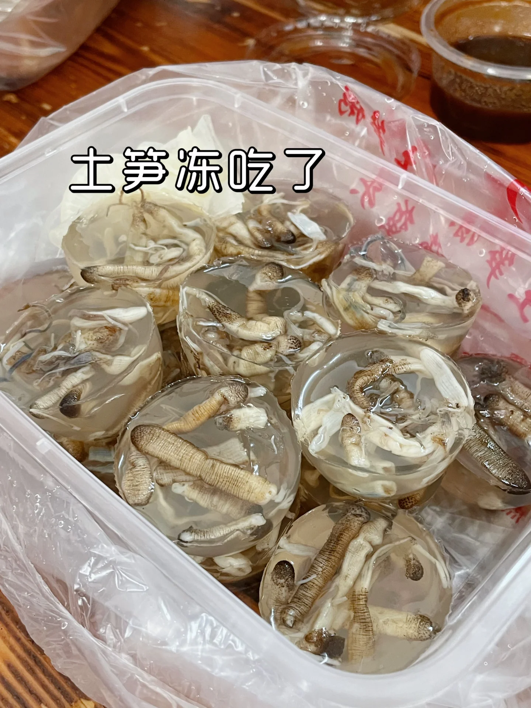
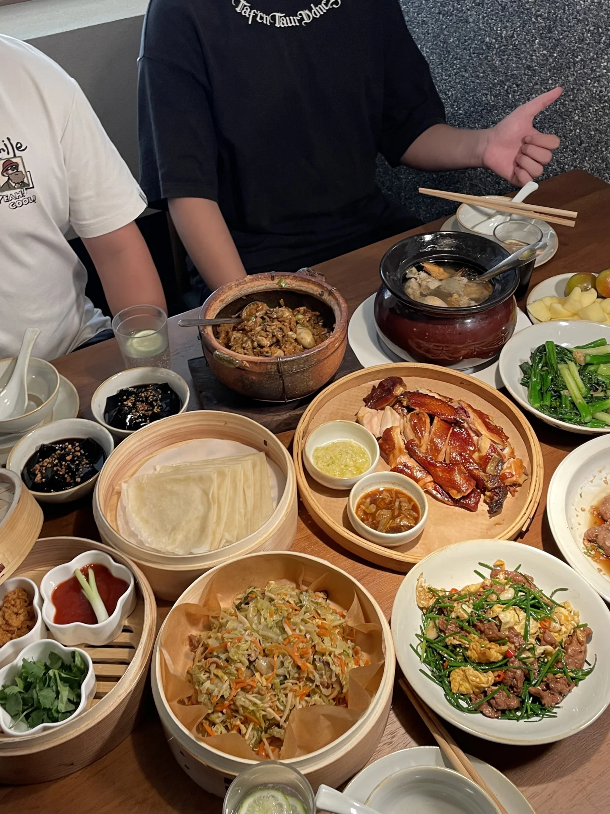
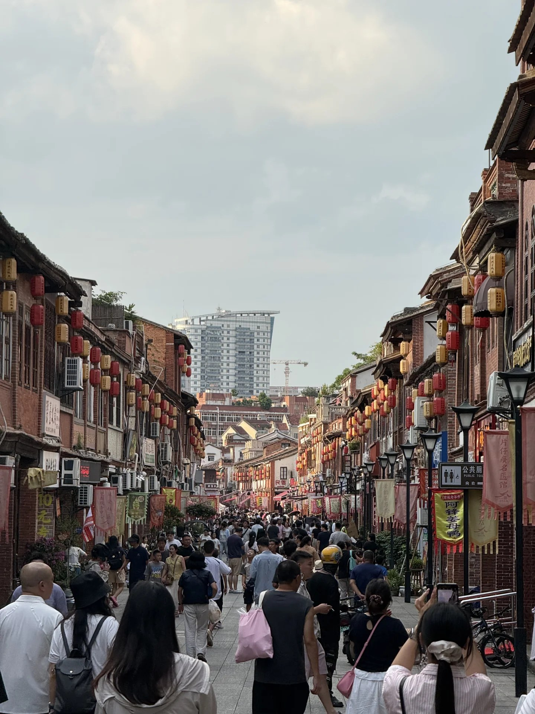
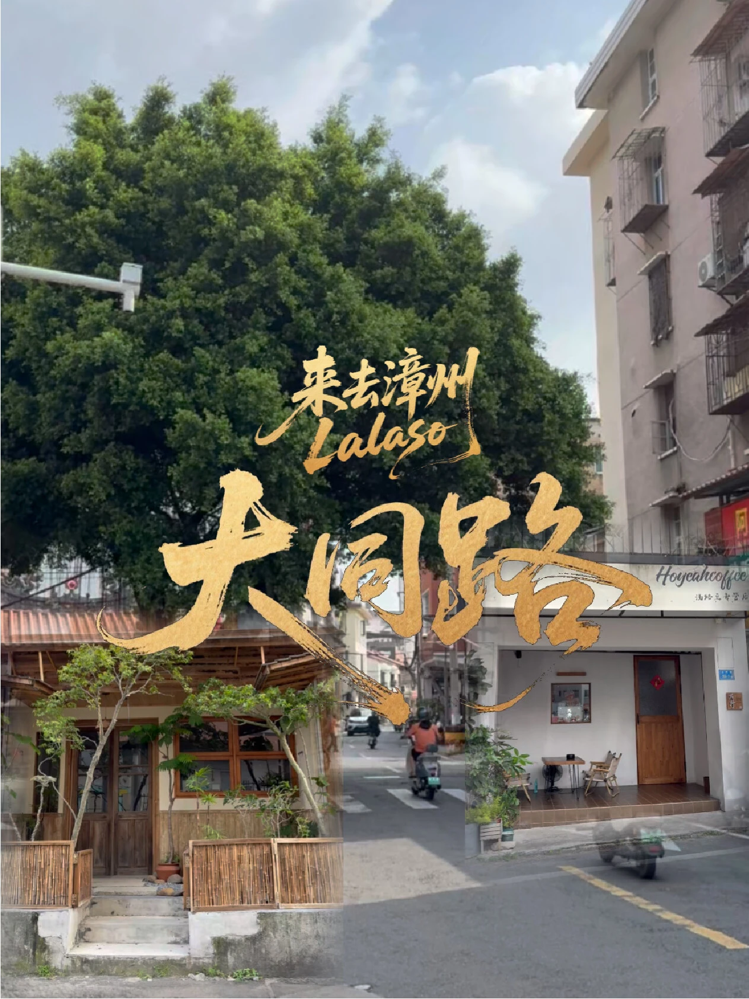
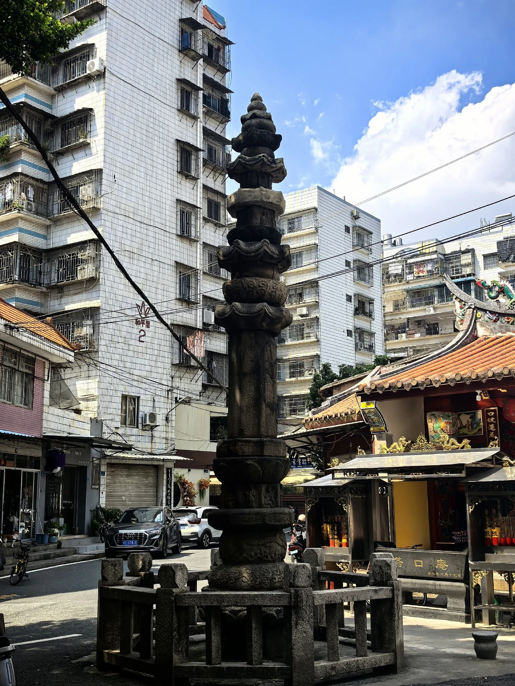
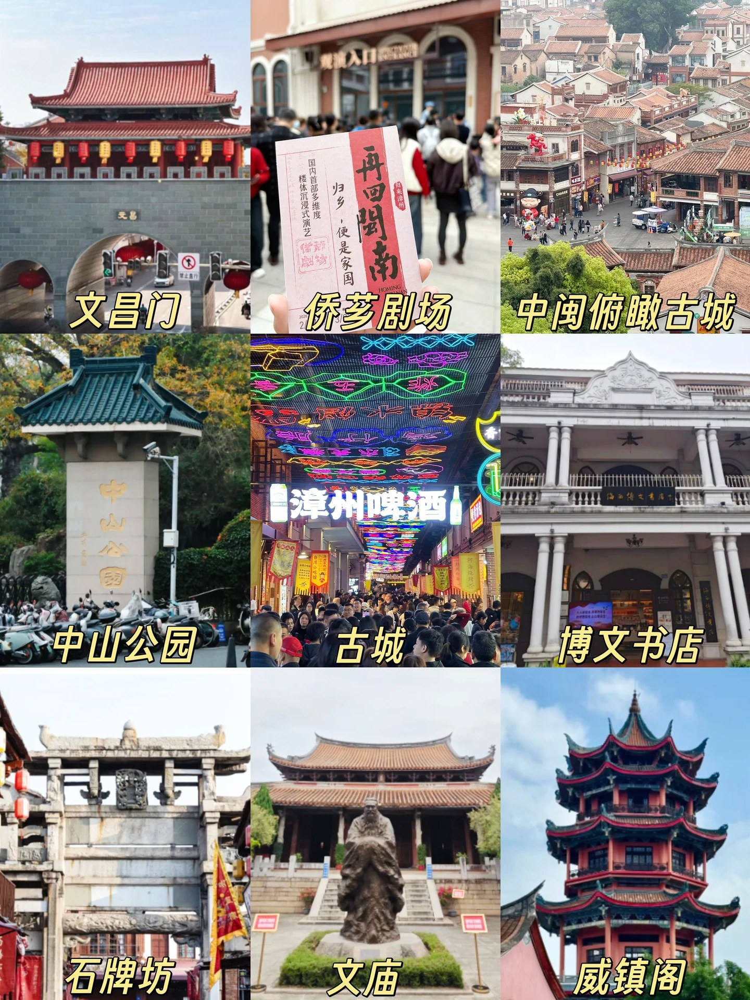
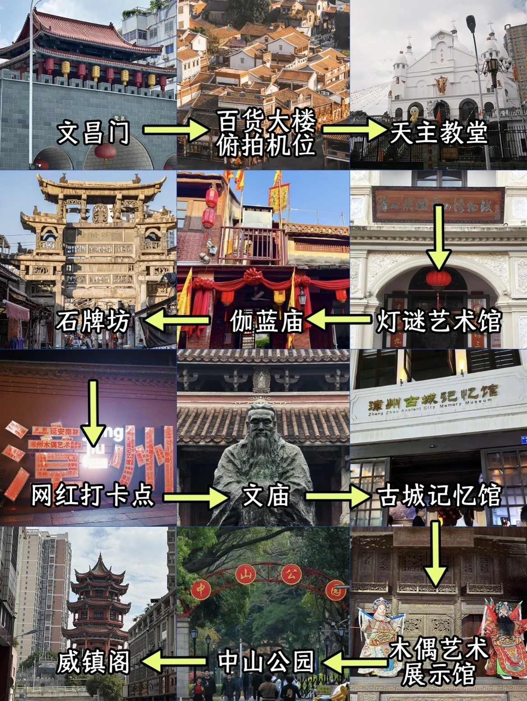
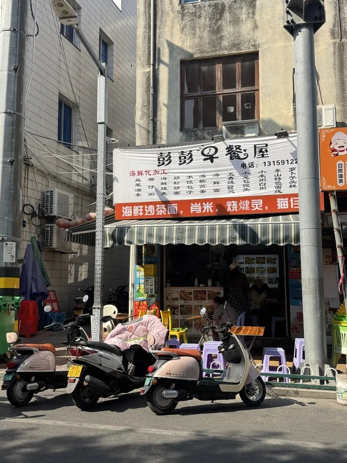

Day1｜10/3 深 → 漳州古城 · 全季
开车与堵车预期
07:00 南山海岸城集合出发，导航终点「全季酒店(漳州古城店)」。主线：滨海→春风隧道→G0422→G15→G1523→靖城进城→博爱西道。
- 高德理想：534.7 km / 6h01（约 13:00 抵）
- 国庆首日：按 ×1.2～1.5 或 +1～2h → 心理抵达 14:00～16:00
- 风险点：滨海/春风、G15 出粤入闽、下高速进城均可能缓行
- 排表口径：下午两点半到三点再稳坐吃午饭；晚到则卤面+蚵仔煎打包逛吃
午饭（当地人向）
先停全季地下库 → 步行约 9 min 进古城。
| 优先级 | 店 | 点什么 |
|---|---|---|
| 主推 | 阿芳卤面(古城店) 太古桥6-11 | 卤面加炸肉+大肠（注意阿芬≠阿芳） |
| 主推 | 建国蚵煎蚵面 新华西路239 | 酥脆蚵仔煎+酸萝卜（午/晚均可） |
| 小吃 | 曾记肉粽、孙氏麻糍 | 边走边吃 |
| 甜饮 | 原公园后门四果汤 / 片仔癀草甘蔗汁 | 青年路·孔庙一带 |

古城逛吃路线（约3h）
15:00～15:30 入住全季（确认两车地下库）→ 15:30～18:30 步行：
- 西门广场 / 钟法路入城 → 台湾路、始兴南路骑楼
- 插入 大同路：塔口庵经幢、七星古井（市井老街）
- 中山公园外围 → 新华西路小吃带
- 北京路曾记肉粽 → 孔庙/文庙外观
- 延安南路侨批/文创 → 青年路四果汤/锅边糊 → 傍晚 香港路夜景回全季







18:30～20:00 晚餐补漏（建国蚵仔煎、四果汤、麻糍）；21:00 回全季。次日 08:00 前出发南靖。
住
全季酒店(漳州古城店)｜博爱西道1-11号｜步行古城约9 min｜订 3 间、确认地下库 2 车位
Day2｜10/4 南靖：田螺坑 + 云水谣 · 书洋住
开车
07:30～08:00 全季早餐退房；08:00 出发。推荐顺序：先田螺坑、后云水谣（上午光线适合「四菜一汤」俯拍）。
| 路段 | 理想 | 节假日预留 |
|---|---|---|
| 全季→田螺坑 | 86 km / 1h27 | 约2h（山路缓行） |
| 田螺坑↔云水谣 | 18.5 km / 31 min | 45～60 min |
| 全季→云水谣（若对调） | 80.3 km / 1h12 | 1.5～2h 含停车验票 |
本地宝：10/1–10/8 景区主干道 08:00–20:00 禁停，停指定停车场。
门票（各约90）
| 景区 | 成人 | 说明 |
|---|---|---|
| 田螺坑 | 约 ¥90/人 | 含土楼群、裕昌楼、塔下等；须实名预约 |
| 云水谣 | 约 ¥90/人 | 含和贵楼、怀远楼、古道等；分开购两张 |
| 合计 | 约 ¥180/成人 | 平台「双景区套票」≈两张之和，不是一张90全含 |
公众号「福建土楼南靖景区」或美团/携程授权渠道，出行前 1～2 天锁 10/4。儿童/老人约半价 ¥45（带证件）。
玩吃时刻
| 时刻 | 事项 |
|---|---|
| 约 09:30～10:00 | 抵田螺坑售票/停车场（可能拖到10:30） |
| 10:00～12:30 | 田螺坑「四菜一汤」观景台；带娃控 2～2.5h |
| 12:30～13:30 | 午饭：村口农家乐土菜（竹笋、炖罐、米粉）或回书洋 |
| 13:30～14:10 | 转场云水谣 |
| 14:10～17:00 | 云水谣：古道、大榕树、水车、怀远楼/和贵楼（景区约17:00止） |
| 17:00～18:00 | 入住书洋 |
| 18:00～19:30 | 晚饭：书洋大众路客家菜（芋子包、小炒、河鱼时价） |
| 20:00 | 早歇；D3 07:00 出发东山 |
住
首选书洋镇（距云水谣约10 min）：途窝假日酒店(原南靖土楼宾馆) 大众路98号，评分4.5；或佳怡/近水楼台等同街。订前确认两车位。云水谣核心民宿：停车难、十一溢价 → 两车家庭不推荐。南靖县城仅书洋订不到时备选（距土楼40～60 min，D3更绕）。
Day3｜10/5 书洋 → 东山半日 → 返深
开车
07:00 书洋出发，导航「风动石」或「南门湾」。理想 179.6 km / 2h17，预留至 09:30 抵岛。南靖→东山中等拥堵（S64收费口、岛内疏港）。
半日精华（控时）
| 时刻 | 事项 |
|---|---|
| 09:30～10:00 | 抵铜陵/南门湾，先停车 |
| 10:00～12:00 | 精华A：南门湾海堤 + 风动石外围（门票约¥45到店核；紧则只外围） |
| 12:00～13:00 | 午饭当地小吃（控时，不做海鲜大桌） |
| 13:00～14:00 | 精华B二选一：马銮湾亲子 或 金銮湾踩沙 |
| 14:00～14:30 | 必须离岛上高速（两车疏港/S64会合后分岔） |
| 14:30～22:00 | 返程：南山→海岸城；龙岗→龙城广场/万达；服务区≤30 min |
砍项顺序：砍风动石进园 → 砍金銮 → 只留南门湾1h + 马銮45 min。不做苏峰环岛/南屿/澳角。
东山午饭（控时）
- 阿强猫仔粥 / 旧戏院·本地猫仔粥
- 忠义蚵仔煎；铜陵烧腱、肖米（摊名现场看）
- 不做：帝业市场加工大桌、游客海鲜排档


玩吃增补
对照小红书/TikHub 古城扫描（当地人向），在 PLAN 主线外可加：
玩（古城半日插入）
- 大同路市井老街 + 塔口庵 + 七星古井（已写入 D1 动线）
- 孔庙/文庙外观加强；青年路既逛又吃；香港路傍晚灯笼氛围
- 停车：巷内少开车，两车优先全季地下库 / 西门广场备选
吃（增补候选）
| 品类 | 店/点 | 备注 |
|---|---|---|
| 四果汤 | 小洪四果汤、公园老牌四果汤、原公园后门 | 到店核招牌 |
| 土笋冻 | 阿卿土笋冻 | 人均线索约40 |
| 面煎粿 | 阿国面煎粿 | |
| 锅边糊 | 青年路锅边糊 | 约16元/碗线索 |
| 其他 | 圆圈松跃生烫、片仔癀草甘蔗汁 | 摊位现场看 |
| 主推保留 | 阿芳卤面、建国蚵煎、曾记肉粽、孙氏麻糍 | KEEP |
注意：阿芬卤面 ≠ 阿芳卤面。纯出片机位笔记降权。
返程倒推
目标：22:00 前到南山海岸城 / 龙岗（龙城广场或龙岗万达）。
高德理想（零拥堵，不可当十一实到）
| 终点 | 起点 | 理想 | 22:00 零拥堵倒推 |
|---|---|---|---|
| 海岸城 | 风动石 | 5h46 | 16:14 |
| 海岸城 | 马銮湾 | 5h35 | 16:25 |
| 龙城广场 | 风动石 | 4h43 | 17:17 |
| 龙岗万达 | 风动石 | 5h05 | 16:55 |
国庆余量后「必须离开」
| 约束 | 算法 | 最晚上高速 |
|---|---|---|
| 南山车（最紧） | 5h46 ×1.3 ≈ 7h30 | ≈14:30 ★推荐 |
| 南山车 | ×1.2 ≈ 6h55 | ≈15:05（几乎无服务区余量） |
| 龙岗·龙城 | ×1.3 ≈ 6h08 | ≈15:50 |
结论写入行程卡：
- 两车统一：14:00～14:30 前离开东山进入 S64/G15（按南山车 ×1.3）
- 硬上限：南山车不晚于 15:00 上高速
- 龙岗可略晚 40～70 min，建议仍跟南山同一窗口离岛
- 若 13:00 仍堵在金銮/南门湾停车场出口 → 立即放弃剩余景点，优先疏港上高速
门票住宿
住宿
| 夜 | 酒店 | 要点 |
|---|---|---|
| D1 | 全季酒店(漳州古城店) 博爱西道1-11 | 步行古城9 min；3间；地下库2车位 |
| D2 | 途窝假日(书洋) 大众路98 或同街 | 距云水谣约10 min；D3去风动石179.6 km/2h17 |
预算锚点：约 500 元/晚/间 × 3 间 × 2 晚（十一可能上浮，尽早锁房）。
门票与费用粗算
| 项 | 量级 |
|---|---|
| 田螺坑+云水谣 | ≈¥180/成人（各90）；儿童半价；风动石若进园约+45 |
| 油费+过路费 | ¥1200～1800 / 两车合计 |
| 酒店 | ¥3000～4500（3间×2晚） |
| 餐饮 | ¥150～250/人/天 ×3（小吃为主） |
| 合计 | 约 ¥8k～14k / 三家 |
行前清单
- [ ] 订全季古城 10/3；订书洋 10/4（确认两车位）
- [ ] 公众号预约 10/4 田螺坑 + 云水谣实名票
- [ ] 两车微信群；儿童座椅、防晒、驱蚊、充电宝
- [ ] D3 导航收藏：风动石、马銮湾、海岸城、龙城广场、龙岗万达
- [ ] 关注「福建土楼南靖景区」十一交通管制
— 高德测距 2026-09-19 · 美食对齐当地人 KEEP · 配图来自古城扫描 + 东山旧档 —